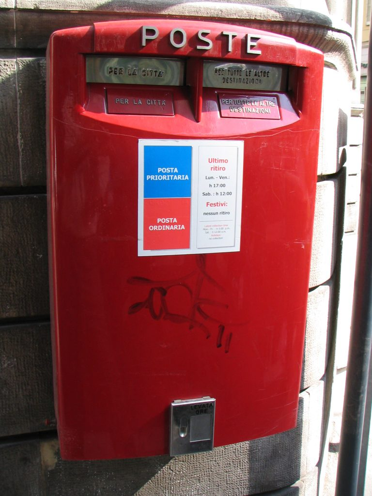

The Italian mailbox
In Italy, the postman always delivers the mail, but never picks it up. If you need to mail letters and cards use the red boxes or, if you need to send a package, go to the post office. Red mailboxes have two small windows to drop the mail in. One says: "Per la città" which means "For the city", the other one says "Per tutte le altre destinazioni," which means "For all the other destinations." Obviously, the one is for local mail while the other is for all other national and international destinations. Tourists usually mail postcards and letters from Italy to their family and friends around the world. A Priority Mail stamp for postcards and letters (up to 20 grams) from Italy to the USA costs €2,20 (which, to me, is just crazy expensive: about $2.40 for a postcard! And this doesn’t include the postcard itself. Add the cost of it to the stamp and we are talking about $3 to send your greetings across the ocean). {This is an excerpt from chapter 9 “The Post Office” of the eBook “Italy from the Inside. A native Italian reveals the secrets of traveling in Italy”. Buy our eBook on Amazon and leave us a review! If it’s good, you’ll make us happy, if it’s bad, you’ll make us improve. Thank you either way!}